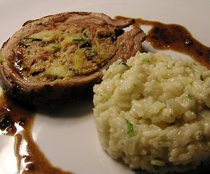

Vitello farcito (gefüllte Kalbsbrust)
5 von 6Zutaten für 4 Personen:
50g Speck, 100g roher Schinken, Salz, 1 Trüffel, 1 Ei, 1 Knoblauchzehe, wenig Brühe, 50g Butter, wenig Milch, Petersilie, Olivenöl, Pfeffer, 600g Bauchfleisch vom Kalb, 15g getrocknete Pilze, 2 Esslöffel geriebener Parmesankäse, 1 Glas Rotwein, 1 Brötchen, 100g mageres Kalbfleisch, 2 dünne Scheiben gepökelte Zunge
Zubereitung:
Das magere Kalbfleisch in wenig Butter erst allein und dann mit dem Speck, der Zunge, den vorher in Wasser eingeweichten Pilzen, der Trüffel, der Knoblauchzehe und der Petersilie anbraten. Das Ganze 2 Mal durch den Fleischwolf drehen. Zu der Mischung das vorher in Milch eingeweichte Brötchen, das Ei, den geriebenen Parmesan, ausreichend Salz und Pfeffer geben und alles gut vermengen.
Die Füllung in die bereits vorbereitete und geöffnete Kalbsbrust füllen und dabei abwechselnd mit Schinkenscheiben schichten. Nun die Öffnung der Kalbsbrust zunähen und das Fleisch mit feinem Küchenzwirn binden, damit es die Form behält.
Die restliche Butter mit ein paar Esslöffeln Öl in einer geeigneten Kasserolle anbraten. Die gefüllte Kalbsbrust hineingeben, salzen, pfeffern und kochen lassen. Dabei zunächst mit Wein, später mit Brühe begiessen und häufig wenden. Ca. 1 Stunde garen und mit Risotto servieren.
